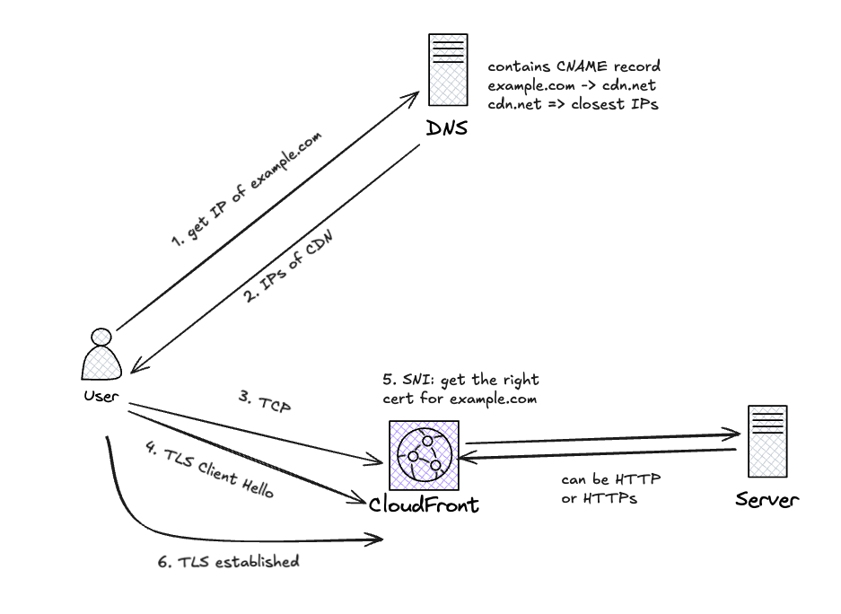

🔐 TLS Termination Over CDN / Proxy / Load Balancer
🧭 Problem Statement
You have a public-facing domain (e.g., example.com) and want to enable HTTPS. Instead of connecting users directly to your backend servers, you place a CDN, reverse proxy, or load balancer (LB) in front of your origin infrastructure.
This raises important architectural questions:
Where is the TLS connection terminated? What does the client see and verify? How is traffic secured between the client, proxy, and origin?
This article clarifies the mechanics and trust boundaries when TLS is used with CDNs, proxies, or load balancers.
🖼️ Diagram of how things work

Setup
-
DNS is configured so that:
example.com → cdn.example.net (CNAME or A record) -
The CDN provider is issued an HTTPS certificate for
example.com, and it is imported at the CDN edge.Here raises a question:
The imported cert only has the public key, then how the TLS handshake successfully happened?
Answer: actually the CDN is loaded with the private key of the cert too.
-
The origin server is configured to receive traffic either via:
- Plain HTTP
- HTTPS (with its own certificate)
Flow
Step-by-step process:
- Client requests
https://example.com:- Browser resolves
example.comto the CDN IP. - Client opens a TCP connection to the CDN.
- Browser resolves
- TLS Handshake begins:
- Client includes
example.comin the SNI (Server Name Indication) field (sent in the Client Hello) - CDN uses the SNI to select the right certificate for
example.com. - CDN responds with the matching certificate (issued by a trusted CA).
- Client includes
- TLS session established:
- The client verifies the certificate.
- A secure channel is now established between the client and the CDN.
- CDN forwards the HTTP request to the origin:
- Over HTTP or HTTPS (depending on your config).
- Origin sees the
Host: example.comheader and serves the correct content.
🔗 TLS Termination Explained
In a typical CDN/LB setup, TLS can be terminated at the edge, at the origin, or both. These options affect how secure and transparent the connection is.
✅ Client → CDN (Public TLS Termination)
- The client opens a TLS session to the CDN or proxy.
- The server presents a certificate for
example.comu sing SNI in the Client Hello - The client verifies the certificate and encrypts traffic.
🧠 This is the only TLS session the client is aware of. The certificate must match the requested hostname.
🔁 CDN → Origin (Internal Communication)
After terminating TLS, the CDN forwards the request to the backend origin server. This internal hop can be:
- 🔓 Plain HTTP
- No encryption between CDN and origin
- Simpler, faster — but data is in cleartext over the internal network
- 🔒 HTTPS
- A second TLS session is established between CDN and origin
- Increases security (useful in multi-tenant or untrusted networks)
🧠 What the Client Sees (and Doesn’t See)
| Aspect | Client Sees? | Explanation |
|---|---|---|
TLS cert for example.com |
✅ Yes | Presented by CDN or proxy during handshake |
| Origin server’s cert | ❌ No | Not exposed unless client connects directly |
| Whether origin uses HTTPS | ❌ No | Client is unaware of internal hop details |
🔐 Trust Boundaries
| Segment | Who Trusts Whom | TLS Required? |
|---|---|---|
| Client → CDN | Client trusts CDN’s cert for domain | ✅ Always |
| CDN → Origin | CDN may validate origin cert | ✅ Optional |
If end-to-end TLS is important (e.g., compliance, internal policy), you must enforce HTTPS from the CDN to origin and ensure the CDN trusts the origin’s certificate.